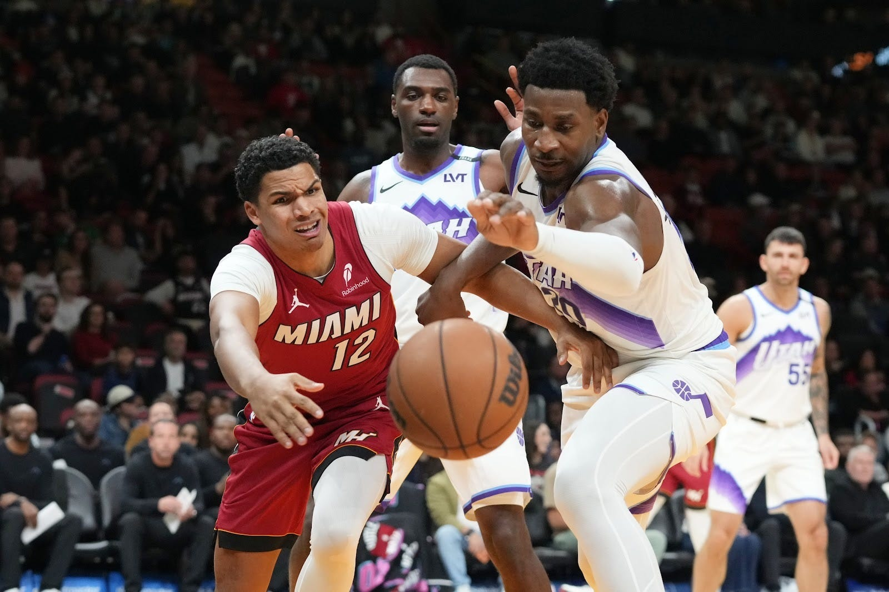
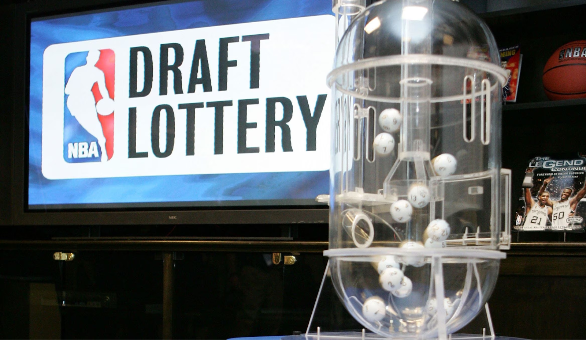

Recently, the NBA has noticed that teams are purposely benching their best player to force losses. The Utah Jazz rested their best player, Lauri Markkanen, and their newly acquired forward, Jaren Jackson Jr., when both were healthy. NBA Commissioner Adam Silver fined the Jazz $500,000, but more teams have been sitting out players and ending their seasons for surgeries that can take place in the summer.

The question that reporters, other team owners, and even the players themselves are now asking is whether tanking is good for the NBA. Adam Silver has publicly stated that he doesn’t support tanking, and he is planning changes to prevent it. Teams sitting out their best players will deter fans from watching and reduce the NBA's ability to generate revenue. Teams that manipulate their records start to question the accuracy of their performance data. The 30th-ranked team, record-wise, could be the 22nd-best team, stats-wise, which makes their chances of getting a better draft pick seem unfair. However, the NBA lottery has changed significantly, giving teams a stronger incentive to tank. The lottery changed so that teams could drop four spots from where their record suggested they should draft, rather than only three. Tanking becomes better in this scenario because it could give these bad teams a higher possible floor even if the lottery doesn’t go their way. Also, with protected picks, the team purposely loses so they can hold the parameters that the protected picks enforce.
Former Maverick owner Mark Cuban liked the idea of teams being able to tank. He defends the idea by saying teams that are already losing and not making the playoffs should try to get better draft picks. Fans don’t want to see their team win if they are bad; they would much rather watch a young star next year that gives them hope. This year, the tanking has been extreme because of the loaded upcoming draft class. You can not go wrong with the first pick, and it seems like every team with a first-round pick will get a rookie who will make the team much better in the long run. Tanking has also been a part of the NBA for years. The Rockets played 38-year-old Elvin Hayes 50 minutes to help secure Hakeem Olajuwon, who eventually won the franchise 2 championships and is considered the greatest Rocket ever.
This issue will continue to be addressed throughout the NBA season, and a solution will be implemented to prevent teams from tanking. Adam Silver has already made it clear that winning from now on will be worth much more. It is very interesting to see how teams respond to the solutions offered and how the league might be changing over the next couple of years. This leaves the only question: before the NBA makes its decisions, do you support the idea of tanking?
